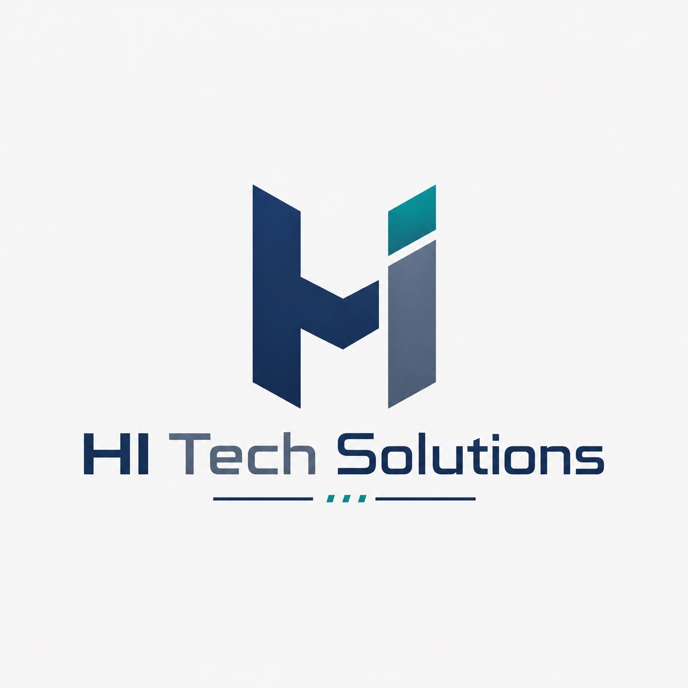

01
Smart Factory Strategy
Digitalisierungs-Roadmaps, Zielarchitektur, Reifegradbewertung und priorisierte Use Cases für produzierende Unternehmen.

HI Tech SolutionsDigital Manufacturing · MES/MOM · Smart Factory
Wir unterstützen produzierende Unternehmen dabei, Fertigung, Maschinen, ERP, MES und Cloud-Plattformen zu einem steuerbaren digitalen Produktionssystem zu verbinden.
Leistungen
HI Tech Solutions fokussiert sich auf die Lücke, an der viele Digitalisierungsprojekte scheitern: Produktion verstehen, IT sauber integrieren und Ergebnisse messbar machen.
Digitalisierungs-Roadmaps, Zielarchitektur, Reifegradbewertung und priorisierte Use Cases für produzierende Unternehmen.
Prozesse für Planung, Rückmeldung, Traceability, Materialfluss, OEE, Shopfloor-Transparenz und Produktionssteuerung.
Verbindung von Maschinen, Edge-Systemen, ERP, D365, MES, APIs, Events und Datenplattformen.
Cloud-native Plattformen, Analytics, Monitoring, Datenpipelines und KI-nahe Anwendungen für die Produktion.
Warum HI Tech Solutions
Viele Anbieter sprechen entweder nur Produktion oder nur Technologie. Unser Ansatz verbindet beides: operative Fertigungsrealität, digitale Prozesse, moderne Plattformarchitektur und umsetzbare Roadmaps.
Erfahrung
Projekt- und Umsetzungserfahrung aus komplexen Produktionsumfeldern.
Vorgehen
Produktionsprozesse, Systemlandschaft, Datenflüsse, Pain Points und Zielbild erfassen.
Use Cases, Architektur, Roadmap, Aufwand, Business Value und Integrationsstrategie definieren.
Prototypen, Integrationen, Dashboards, MES-Prozesse, Cloud-Komponenten und Übergabe realisieren.
Rollout, Betrieb, Monitoring, Schulung, Support-Modell und kontinuierliche Verbesserung etablieren.
Kontakt
Lass uns über eure Produktion, digitale Roadmap oder konkrete MES-/Cloud-Herausforderung sprechen.